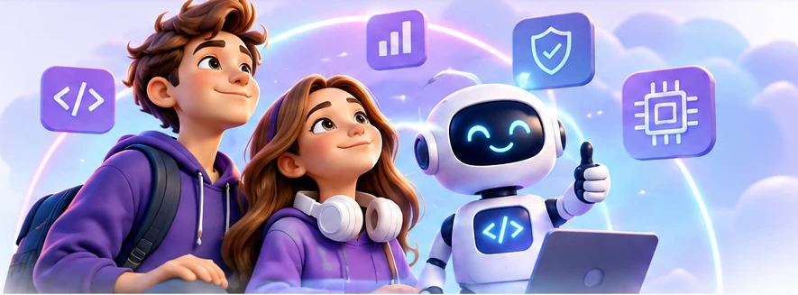

7–9 класи · інтерактивна майстеркаЯ можу!
Я можу!
Інформатика без готових відповідей
П’ять життєвих проблем. Різні інструменти. Ваші власні рішення. Перевіряйте гіпотези, експериментуйте й створіть персональну стратегію.
Прогрес зберігається у Вашому браузері. Для PDF не потрібні сторонні сервіси.

Перед стартом: як Ви дієте?
Оцініть, наскільки впевнено Ви можете самостійно розв’язати незнайому проблему за допомогою цифрових інструментів.
Ім’я або псевдонім для звіту (необов’язково):
Ви пройшли всі п’ять місій
Тепер оцініть свою впевненість повторно. Порівняйте її з початковою та сформулюйте власну стратегію.
У вікні друку виберіть «Зберегти як PDF». На смартфоні скористайтеся меню друку або збереження PDF.